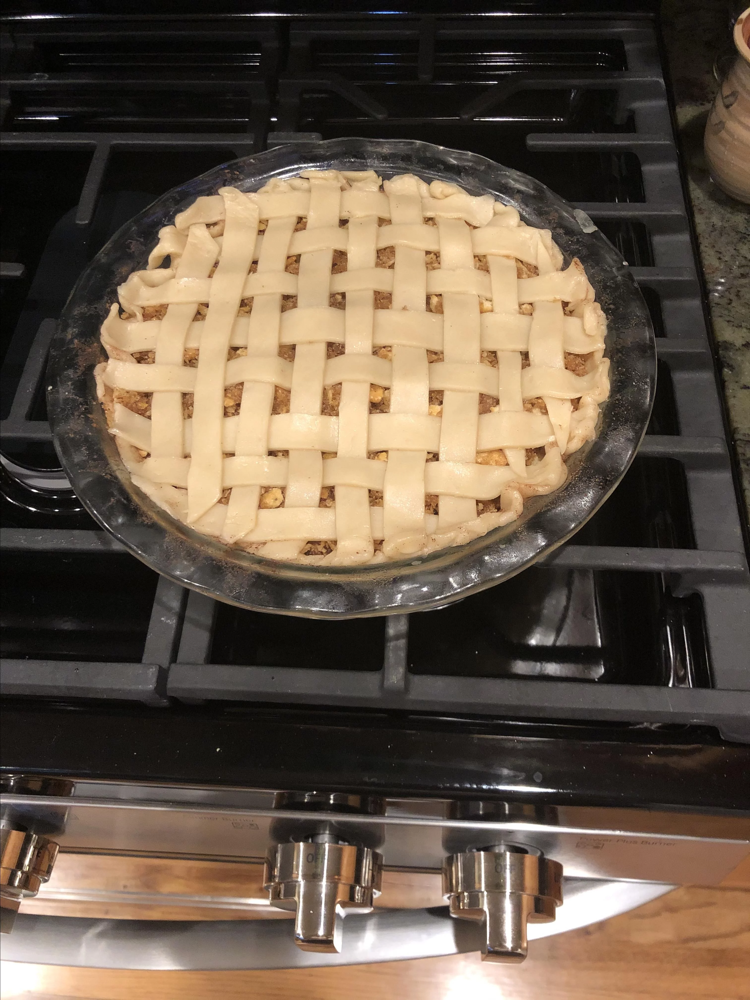

Apple Pie Recipe

Description
Apple pie flavor without the apples. Fun to make and sure to please, but should be served warm! Enjoy.
Ingredients
- 2 cups water
- 1 cup white sugar
- 2 teaspoons cream of tartar
- 30 buttery round crackers
- ½ teaspoon ground cinnamon
- 1 tablespoon lemon juice
- 1 recipe pastry for a 9 inch single crust pie
- 1 cup crushed buttery round crackers
- ½ cup packed brown sugar
- ½ teaspoon ground cinnamon
- ⅓ cup butter, melted
Steps
-
Preheat oven to 425 degrees F (220 degrees C).
-
In a saucepan over medium high heat, combine the water, sugar and cream of tartar; bring to boil.
-
Drop in whole crackers and boil for 5 minutes. Pour mixture into pie shell; sprinkle with cinnamon and lemon juice.
-
Mix together the crushed crackers, brown sugar, cinnamon and butter; sprinkle over pie filling.
-
Bake for 15 minutes and reduce heat to 375 degrees F (190 degrees C) and continue to bake for 15 to 20 minutes longer. Serve warm.
Return to recipes list